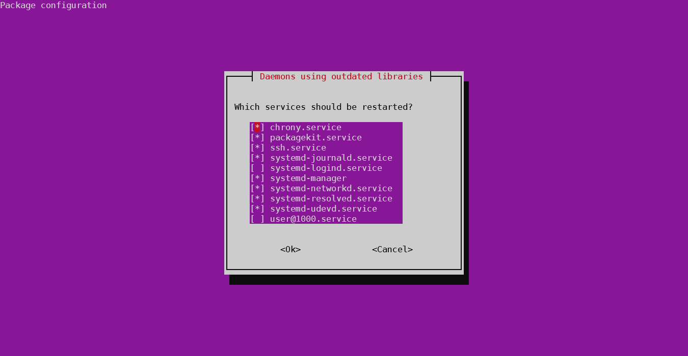

Ubuntu 22.04 出現 Daemons using outdated libraries 提示
在使用 apt 安裝套件時，突然跳出一個視窗，寫著 Daemons using outdated libraries，不太敢動就先取消了。
查了一下發現是新版本的 Ubuntu 會在 apt 更新完套件後執行 needrestart 這個指令，用於告知有哪些服務需要重新啟動。預設行為就是打開這個互動式的介面。若使用腳本執行 apt 指令，跳出這個介面可能會導致腳本中斷。

解決方法
最極端的方法是直接移除 needrestart 套件，但這個套件是有用處的，因此我們透過修改設定檔的方式來解決。
打開 /etc/needrestart/needrestart.conf 這個檔案，其中一段如下：
# Restart mode: (l)ist only, (i)nteractive or (a)utomatically.
#
# ATTENTION: If needrestart is configured to run in interactive mode but is run
# non-interactive (i.e. unattended-upgrades) it will fallback to list only mode.
#
# $nrconf{restart} = 'i';先將最後一行取消註解，然後把 i 改成 l 或 a（我選擇 a 讓它自動執行重啟），然後存檔再跑一次 needrestart 讓剛剛應該重啟的跑一下。
Reference
本部落格所有文章除特別聲明外，均採用 CC BY-NC-SA 4.0 許可協議。轉載請註明來自 JHTNT Blog！
評論